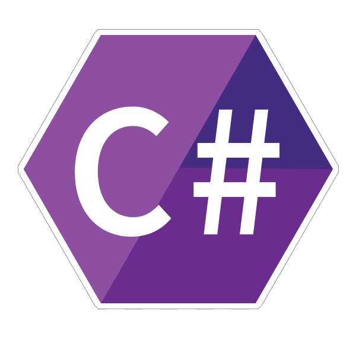

C# (произносится как "си шарп") — современный объектно-ориентированный
и типобезопасный язык программирования. C# позволяет разработчикам
создавать множество типов безопасных и надежных приложений, работающих
в экосистеме .NET. C# относится к широко известному семейству языков C,
и покажется хорошо знакомым любому, кто работал с C, C++, Java или JavaScript.
C# — это объектно- и компонентно-ориентированный язык программирования.
C# предоставляет языковые конструкции для непосредственной поддержки
такой концепции работы. Благодаря этому C# подходит для создания и
применения программных компонентов. С момента создания язык C# обогатился
функциями для поддержки новых рабочих нагрузок и современными рекомендациями
по разработке ПО.